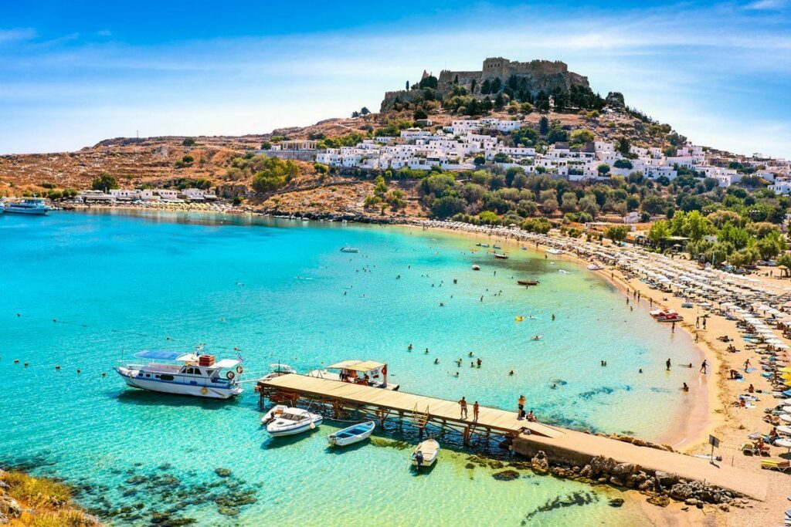

Apollonia är en liten plats i Grekland som ligger på ön Naxos. Den är känd för sin lugna miljö, vackra natur och närheten till havet. I Apollon finns ett känt turistställe som heter Kourosstatyn, en stor gammal staty som ligger kvar i naturen sedan antiken. Besökare kan också njuta av stränder, små tavernor och det klara vattnet. Kombinationen av historia, natur och avkoppling gör Apollon till ett trevligt resmål.
Apollonia var uppkallad efter guden Apollon, eftersom man trodde att han skyddade staden.
Rhodos

Rhodos är en populär ö i Grekland som ligger i Egeiska havet. Den är känd för sitt varma klimat, sina stränder och sin rika historia. På Rhodos finns många turistställen, till exempel den gamla staden Rhodos stad som är med på UNESCO:s världsarvslista. Besökare kan också se det historiska Stormästarpalatset och njuta av både sandstränder och klippiga vikar. Kombinationen av sol, bad och kultur gör Rhodos till ett mycket omtyckt resmål.